Libraries for building and testing native Reason programs.
describe("Example", ({test}) => {test("ints", ({expect}) =>expect.int(7).toBe(5));test("bools", ({expect}) =>expect.bool(true).not.toBe(false));});
Running 1 test suite
FAIL Example
• Example › ints
expect.int(received).toBe(expected)
Expected: 3
Received: 2
3 ┆
4 ┆ describe("Example", ({test}) => {
5 ┆ test("ints", ({expect}) => {
6 ┆ expect.int(1 + 1).toBe(3);
7 ┆ ();
8 ┆ });
9 ┆ test("bools", ({expect}) => {
Raised by primitive operation at ./tests/ExampleTest.re:6:4
Called from ./map.ml:291:20
Called from ./common/CommonCollections.re:171:8
Test Suites: 1 failed, 0 passed, 1 total
Tests: 1 failed, 1 passed, 2 total
Time: 0.002sConsole
A web-influenced polymorphic console API for native Console.log(anything) with runtime printing.
Learn MoreConsole.log(4.6);Console.log("This is a string");Console.log(a => a + 1);
4.6
This is a string
closure(2182546092)<Pastel bold=true color=Pastel.Yellow>"This will be formatted as bold, yellow text"</Pastel>
This will be formatted as bold, yellow textRefmterr
Utility for extracting structure from unstructured ocaml compiler errors, and displaying them.
Learn Morerefmterr dune build -p my-project
# Unformatted Error Output:
# File "myFile.ml", line 2, characters 13-21:
# Error: Unbound type constructor whereAmI
ERROR myFile.ml:2 13-21
1 ┆ type asd =
2 ┆ | Hello of whereAmI
3 ┆ | Goodbye
The type whereAmI can't be found.FCP.printFile("src/file-context-printer/test/DummyFile.re",((7, 1), (7, 11)),);
4 ┆ * This source code is licensed under the ...
5 ┆ * LICENSE file in the root directory of ...
6 ┆ */;
7 ┆ let myFunction = () => print_endline("do something");
8 ┆
9 ┆ let ex = (arg) => {
10 ┆ if(arg === true) {